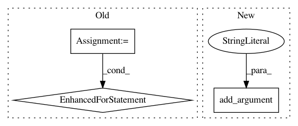

0557b8abe6df2bae50bbda83478762ab96ec25ba,examples/semantic_segmentation/eval_semantic_segmentation_multi.py,,main,#,15
Before Change
result = eval_semantic_segmentation(pred_labels, gt_labels)
for iu, label_name in zip(result["iou"], label_names):
print("{:>23} : {:.4f}".format(label_name, iu))
print("=" * 34)
print("{:>23} : {:.4f}".format("mean IoU", result["miou"]))
print("{:>23} : {:.4f}".format(
"Class average accuracy", result["mean_class_accuracy"]))
After Change
parser = argparse.ArgumentParser()
parser.add_argument(
"--dataset", choices=("cityscapes", "ade20k", "camvid", "voc"))
parser.add_argument("--model", choices=sorted(models.keys()))
parser.add_argument("--pretrained-model")
parser.add_argument("--batchsize", type=int)
parser.add_argument("--input-size", type=int, default=None)
args = parser.parse_args()
In pattern: SUPERPATTERN
Frequency: 3
Non-data size: 3
Instances
Project Name: chainer/chainercv
Commit Name: 0557b8abe6df2bae50bbda83478762ab96ec25ba
Time: 2019-05-17
Author: shingogo@hotmail.co.jp
File Name: examples/semantic_segmentation/eval_semantic_segmentation_multi.py
Class Name:
Method Name: main
Project Name: ray-project/ray
Commit Name: 57544b1ff9f97d4da9f64d25c8ea5a3d8d247ffc
Time: 2020-05-11
Author: sven@anyscale.io
File Name: rllib/examples/nested_action_spaces.py
Class Name:
Method Name:
Project Name: microsoft/nni
Commit Name: 2de52a8976971da4836727ba9242fedcc7474878
Time: 2020-01-16
Author: 656569648@qq.com
File Name: examples/model_compress/slim_torch_cifar10.py
Class Name:
Method Name: main